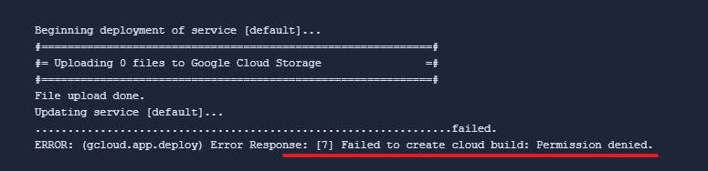
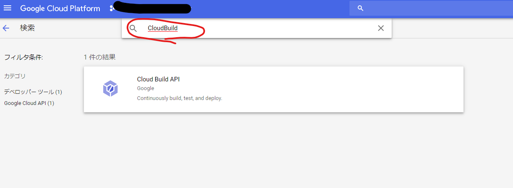
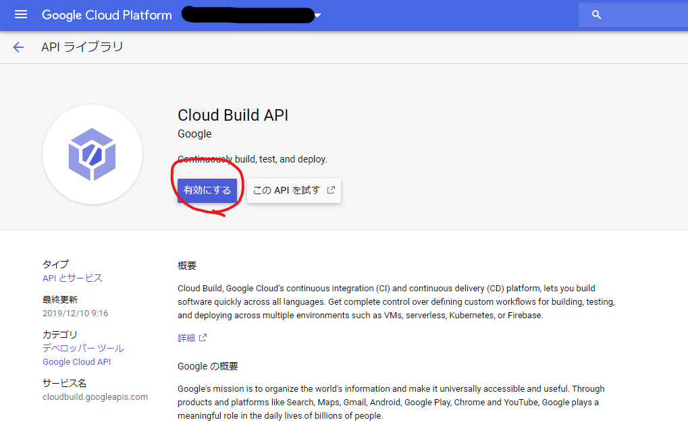
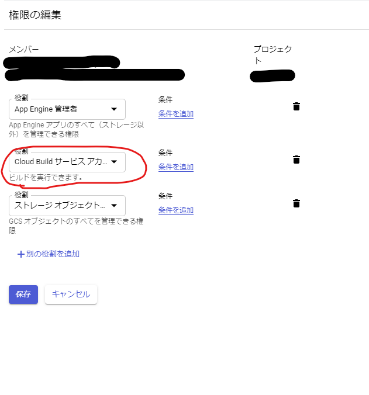

GCP AppEngine のデプロイに Cloud Build の権限が必要になったっぽい
概要
自分の勉強用のメモ書きなど、一般公開はしたくないものの、インターネット上から一部の 人に見せたいようなドキュメントは、普段 AppEngine × IdentityAwareProxy で認証付きサイトとして限定公開している。
デプロイを手動でやると面倒なので、BitBucket の BuildPipeline から自動でデプロイするように設定しているのだが、2週間ぐらい前に突然失敗するようになっていた。
対象となる人
gcloud app deploy コマンド実行時、下記のように、Failed to create cloud build: Permission denied. と表示される人。

結論
題名の通り。デプロイに使っている サービスアカウントから、CloudBuild を実行できるようにしてあげたらデプロイできるようになる。
以下、手順。
API の有効化
プロジェクトで普段 CloudBuild を使っていない場合は、API を有効化してやる。 プロジェクトオーナー権限でデプロイしている人は、この手順だけでOKのはず。
APIとサービス から API の有効化 ボタンを押下して、API を有効化する。


当該サービスアカウントに CloudBuild の実行権限を付与する
サービスアカウントをきっちり管理している人は、最低限の権限しか与えていないはずなので、 CloudBuild サービスアカウント ロールを付与してやる必要がある。
IAM と管理 -> IAM から、デプロイに使っているサービスアカウントを選択して、
下記のように、Cloud Build サービスアカウント の役割を追加する。

最終的に、下記の権限がついていればOK
-
AppEngine 管理者
-
Cloud Build サービスアカウント
-
ストレージオブジェクト管理者
原因
app engine のデプロイ時、内部的に CloudBuild が使われるようになったのだと 予想されるが、ちゃんとした情報ソースは見つかっていない。
Cloud Functions で、Cloud Build を使うから、API 有効にしてねという旨は、ActionRequrired でメール飛んできてるけど、それ関連かな？